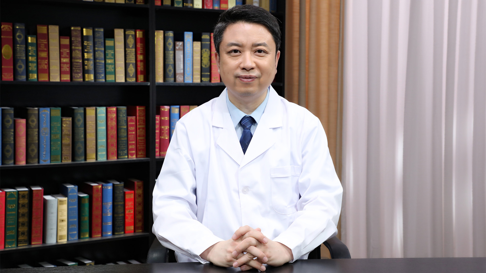

1.75 乳腺结节微波消融术¶
戴维德 主任医师¶

北京医院超声医学科主任 主任医师 硕士生导师；
中国医师协会超声医师分会介入专业委员会常务委员；中国医药教育协会头颈肿瘤专业委员会委员；中国医药教育协会肝病专业委员会委员；中国研究型医院学会乳腺专业委员会青年委员；北京乳腺病防治学会健康管理委员会常务委员；北京医师协会甲状腺疾病专家委员会委员；北京癌症防治学会甲状腺癌专业委员会委员；北京中西医结合学会甲状腺病专业委员会委员。
主要成就： 参与多项国家级、省部级、局级科研项目，在国家级核心期刊发表论著40余篇，参与编写学术专著1部；曾获院级医疗技术创新奖4项及院级科研成果奖3项；曾获首都卫生系统“奥运会微笑服务大使”“北京医院十佳青年”“北京医院优质服务之星”“北京医院优秀共产党员”“北京医院保健工作先进个人”等荣誉称号。
专业特长： 从事超声医学临床、科研及教学工作20余年，熟练掌握腹部、颈部及四肢血管、甲状腺、乳腺等器官病变的超声诊断技能，对各部位肿瘤良、恶性鉴别诊断方面积累了丰富的临床经验；擅长超声引导下对肝、肾、甲状腺及乳腺肿物、浅表淋巴结的穿刺活检，超声引导下经皮微波消融治疗甲状腺、甲状旁腺及乳腺肿瘤、颈部淋巴结转移癌、超声引导下麦默通微创旋切治疗乳腺肿瘤。
乳腺结节是怎么回事？¶
（采访）乳腺结节是怎么回事？
乳腺结节是一种通俗的讲法，不是一个医学概念，我们临床当中碰到的，比如患者主诉摸到一个肿块，这个可以叫乳腺结节；另外，医生触诊摸到的肿块也叫乳腺结节，它还有其他叫法，比如乳腺肿块，乳腺肿瘤等等，都包括在乳腺结节范围之内。
如果要定义乳腺肿瘤，实际上还是需要到医院进行必要的影像学检查来确诊，才能定义。这是一个；第二个，其实乳腺结节在非常宽泛的定义当中，最常见的是乳腺纤维腺瘤，大概占所有乳腺结节的7%-13%，它的比例还是挺高的。
（采访）就是不管是我们自己，还是医生初步摸到的疙瘩，都把它称为结节，具体的到底是肿瘤，还是纤维腺瘤，我们还需要做检查才能确定。
对。一个是要通过专业的医生诊断，尤其是乳腺外科的医生，他会触诊；第二，凭医生的手感，凭医生的经验来决定，摸到的这个乳腺结节，下一步需要进行哪些检查，甚至根据诊断进一步来进行哪些治疗。
（采访）主任，乳腺结节总体来看发病率高吗？通常是哪个年龄段的女性比较容易长？
乳腺结节总体来讲是这样的，作为良性结节，实际上从超声的经验来看，年轻女性更多一些，就是二十多岁到三十多岁这个年龄段；作为恶性结节，拿乳腺癌来讲，一般发生在四十五岁以后，五十多岁，就是绝经期和绝经期期间的妇女，更容易得。实际上年龄的划分已经不是限定的这么窄了。
发病年龄实际上是向年轻化发展，也向年龄更大的方向发展，怎么说？我们见到年龄最小的，十几岁也有得乳腺癌的，八十岁、九十多岁的老太太，也有得乳腺癌的。甚至在性别上，男性，尤其是年龄比较大的男性，也有得乳腺癌的，所以从年龄来说，只是大体上发病率更集中在这几个年龄段而已。
摸到乳腺结节，自己怎么简单判断是良性纤维腺瘤，还是恶性乳腺癌？¶
（采访）主任，乳腺结节一般是良性的，还是恶性的？
可以区分为良性和恶性两部分，当然要是具体来说，乳腺结节主要分几大类：一类是妇女哺乳期引起的乳腺局部炎症，或者叫乳腺感染，包括患者本人也会摸到一个肿块，而且摸的时候会有触痛的感觉，另外就是乳头会有溢液，可能还伴有其他的症状，比如发热，这是第一个。
第二个，比如就是内分泌紊乱、失调引起的，这种多半是乳腺增生的团块，它实际上不是很具体的一个结节，但是能摸到，医生触诊的时候感觉就是凹凸不平，有些地方厚，有些地方薄，患者也有因为这个原因来就诊的，实际上要通过做超声检查，通过做其他的检查，去确诊到底是不是乳腺增生这样的。
还有一类可能是囊性包块，什么叫囊性包块？实际上就是外层有一个囊皮，里面是液体的，这叫囊性结节，我们也统称为囊肿，这类结节其实发病率也是蛮高的，这类结节大部分都是良性的，有些囊性结节实际上随月经周期会有一些改变，比如月经前会比较大，比较明显，但是月经过后慢慢就缩小了，甚至特别小的囊肿就发现不了了，所以它有周期性变化的规律。
还有一类就是纤维腺瘤，其实这类发病比例也蛮高的，大概7%-13%的乳腺结节患者，属于纤维腺瘤，它的特点也非常明确，触诊时的手感是肿块特别圆，特别光滑，有活动度，能动。所以我们经常跟患者交流的时候，就会问患者，你自己发现乳腺有结节，这个结节动不动？其实这个特点很关键，因为下面我要讲乳腺的恶性结节。
实际上它和恶性结节最主要的区别之一，就是肿块的活动度，良性的结节，包括纤维腺瘤，肿块的活动度非常好，摸起来会到处跑，这叫乳腺纤维腺瘤；还有一类也是属于良性的，叫乳头状肿瘤，或者叫导管内乳头状瘤，这类虽然是良性的，它的特点是生长在乳头附近，其实有时候，有经验的乳腺外科大夫是能用手触诊到的。
当然一般的自己去摸，很难摸到，因为它比较深，另外在乳晕区，这个不是特别好摸的，它的特点是什么？实际上从病理的角度讲，就是跟乳头相连的乳导管，主要是粗的大导管里面，长了一个实性的肿物，所以它的临床特点就是分泌，就是乳头能分泌液体，当然大部分情况是良性的，分泌的液体是比较清亮的，白色的或者透明的。
有时候颜色稍微深一点，总之来讲都是颜色发浅的分泌物，而且不太多，我们一般遇到这种情况，肯定要判别它是良性，还是恶性，但是不管怎么样，这种肿瘤是有一定的概率转变成恶性结节的，所以如果碰到这种情况，我们还是建议患者进行干预治疗；最后一个，其实在治疗当中，是非常重要的治疗重点或者叫治疗难点，就是乳腺的恶性结节，比较多的就叫乳腺癌。
当然通过病理分型还有很多种，比如导管癌、腺癌等等，这是病理分型，它也是有一定特点的，刚才说良性结节摸起来活动度比较大；恶性结节的活动度是比较差的，就是结节摸着不动，就好像跟周围组织粘连上了，这是第一点。
第二个，恶性结节摸起来比较硬，所以一般做检查的时候，我们会询问患者，医生也会自己去触诊一下，这个结节硬度怎么样？比较软的，活动度比较好的，一般都是良性，可能我们就不是特别担心了，但是如果摸到这个结节非常硬，有时候硬得就跟石头似的，这种情况往往是恶性结节，基本上结节就是分这几大类。
乳腺结节和乳腺增生是一回事吗？¶
（采访）主任，我们知道乳腺增生也是比较常见的，它和乳腺结节是一回事吗？
是这样，它有交叉的一部分，乳腺增生的概念现在提得不是很多，为什么这么讲？因为现在从超声角度来讲，以前经常说女同志有乳腺增生，超声检查就出报告了，但现在一般认为，如果没有特殊的情况，比如乳腺腺体特别的厚，结构特别的乱，而且伴随着有明显的症状，比如疼痛这些症状，一般不再单独报告是乳腺增生了，但确实是有乳腺增生这个问题存在。
作为结节来讲，有些结节是乳腺增生的一种表现，增生结节，比如由于内分泌紊乱、失调引起的，这种多半是乳腺增生的团块，它实际上不是很具体的一个结节，但是能摸到的，我们触诊的时候感觉就是凹凸不平，有些地方厚，有些地方薄，患者也有因为这个原因来就诊的。
它大体上的特点一般是多发的，个头一般都比较小，从超声上看，边界有时候不是特别清楚，这样的叫乳腺增生结节，所以大体上两者有交错的地方，但实际上也是分开的两个概念。
良性乳腺结节是什么原因引起的？和内分泌不调有关吗？¶
（采访）主任，乳腺结节通常是由什么原因导致的？
第一个比较大的原因就是感染，也就是俗称的发炎了，有炎症，一般发生在哺乳期内，这个炎症是很常见的，就是我们说的乳腺炎，明显的特点就是能用手摸到，患者本人就能摸到一个非常大的包块，而且摸的时候有触痛，另外又伴随着比如发热了，从皮肤表面上有时候也能感觉到。
因为如果有炎症，一般就是发红了，肿了，局部皮肤温度也会加热，红、肿、热、痛，这是炎症的四大表现，乳腺炎也在这个范围之内，所以一般这是第一原因，发炎了；第二个原因就是有一些脂肪的坏死，比如受到外伤、外力，什么情况下？比如孩子可能三四岁，母亲要抱他，小孩的脚不小心正好踹了乳房一脚。
这是偶尔发生的，或者会出现其他情况，比如乳腺碰到比较坚硬的东西，如果碰撞程度比较重，也会造成乳腺局部脂肪的坏死、沉积，这是第二种原因；第三种就是体内激素水平的变化，导致纤维腺瘤发生，年轻女性容易发生这种结节，这是一种情况；还有一种就是比如由于内分泌紊乱、失调引起的，这种多半是乳腺增生的团块。
它实际上不是很具体的一个结节，但是能被摸到，我们触诊的时候感觉就是凹凸不平，有些地方厚，有些地方薄，患者也有因为这个原因来就诊的；还有一类也是属于良性的，叫乳头状肿瘤，或者叫导管内乳头状瘤，这类虽然是良性的结节，它的特点是生长在乳头附近，其实有时候，有经验的乳腺外科大夫是能用手触诊到的，这就是乳头导管内发生问题了。
实际上有些情况是跟内分泌的激素改变有关系，另外跟身体状况也有关系，甚至跟有些遗传因素有关，母系遗传，我主要说的母系，比如母亲这一支基因，甚至姥姥、姐妹这些都有关系，它是有遗传因素在里面起作用的，它是由于综合因素的作用，形成的这么一个结果。
乳腺结节有哪些治疗方法？¶
（采访）主任，乳腺结节都有哪些治疗办法？
实际上治疗分这么几大块，其实不能叫治疗方案了，叫处理原则。我们见得最多的像增生结节，小的纤维腺瘤，没有症状，也没有其他的临床体征表现的，可以让患者先观察，就是超声检查发现这种结节是存在的，但是不需要处理，不处理也是一种处理原则。
就是适用于大多数良性结节，结节不太大的，患者本身也没有主观诉求的，比如患者摸到结节了，心理上特别有压力，或者这个结节感觉到疼了，是不是要处理？所以就来咨询医生了，像这种情况，我们可能要考虑下一步的治疗，但是除此之外，大部分良性结节是可以观察的，尤其是小结节，基本上小于1cm的结节，都是可以观察的。
比如每隔半年去医院做个彩超，检查一下，看看结节有没有进一步发展、长大，或者也可以做其他检查，比如钼靶X线，就是在放射科拍片子这种，当然还有其他的像磁共振，也是可以对乳腺进行检查的，甚至还有其他检查手段，但是第一个处理原则就是，有些结节是可以观察的，良性的、小的结节，我们不做处理，这是第一个。
第二个就是最传统的，最标准的做法就是遇到一些有手术适应证的，这个结节比较大的，是不是会发生其他问题，包括导管乳头状肿瘤，其实它是属于有手术适应证的，但不是属于很急的肿瘤，我们可以选择时间去做手术，这是第二种方法，做手术。手术适用于很多种结节，比如大的纤维腺瘤超过1cm了，甚至有些大纤维腺瘤都达到2cm，甚至3cm，这种情况。
恶性肿瘤毫无疑问，首先的选择肯定是如果能手术就做手术，但是说得笼统一些，是在没有特别强调、特殊的情况下。其实这个特殊情况也很普遍了，什么情况？发生转移了，比如发生了锁骨上的淋巴结转移了，发生了肺转移了，或者发生了身体其他部位的乳腺癌的转移了，这个时候可能不会首选手术，但是手术确实是所有治疗里，最经典的、最标准的治疗方式，这是第二种方法。
除手术之外，和手术类似的，但是创伤要比手术小一点的，叫乳腺旋切术，微创旋切术也可以对局部的乳腺肿块进行治疗，这是第三种方法了；还有一种就是乳腺的微波消融治疗，它是属于热消融的一种，也是属于微创治疗，是这种情况；另外还有一些其他治疗，我简单说一下，包括如果发现乳腺肿块是囊性的，囊性就是肿块里面都是液体的东西。
这种适用于什么？适用于很多种方式，有手术切除的方式，可以用于囊性结节的治疗；乳腺旋切也是可以的，微创旋切术；还可以做消融术，也是可以的。还可以做什么？还可以做超声引导下的药物注射，硬化治疗也是可以的，这个硬化治疗我简单说一下，因为肯定很多人不知道这个情况，不了解这个情况。
它就是在超声引导下进根细针进去，我带的这是10ml注射器，把针尖给大家看一下，其实很细的注射器扎到乳腺囊肿里头，可以把液体都抽出来，它有负压，抽出来以后囊肿不就瘪了吗，当然瘪了不是最终目的，因为整个囊壁细胞还是活着的，过了一个月很可能囊肿长得跟原来一样大，所以硬化治疗就分两步，第一步抽液，第二步要把硬化剂打进去。
硬化剂实际上是一种类似酒精的东西，它起一个硬化作用，把囊壁细胞通过化学作用都杀掉了，所以囊壁闭合以后也不会再生成囊液，这就叫硬化治疗。除此之外，平常也接触得比较多的，还有中医治疗，这也不失为一种有效的治疗，它的特点是什么？大家知道中医比较缓和，缓和意味着什么？治疗周期可能会长一些，它是缓慢地起作用。
它不像手术，拿掉结节效果就立竿见影，但是中医也是非常有效的，有些时候它从机体来考虑，比如气血瘀滞，从这些方面进行对证，有经验的中医医生会把药方调理到非常合适的范围之内，进行中医治疗，另外除了中医服药的方式，还有敷贴，可能有各种作用的敷贴，去敷在乳腺表面，也是有很好的治疗作用。大体上的治疗就分这几种。
乳腺囊肿是什么？怎么通过超声引导下做硬化治疗？¶
什么叫囊性包块？实际上就是外层有一个囊皮，包块里面是液体的，这叫囊性结节，我们也统称为囊肿，这类结节其实发病率也蛮高的，大部分都是良性的，有些囊性结节实际上随月经周期会有一些改变，比如月经前会比较大，比较明显，但是月经过后慢慢就缩小了，甚至特别小的囊肿就发现不了了，所以它有周期性变化的规律。
如果发现乳腺肿块是囊性的，囊性就是里面都是液体的，这种适用于什么治疗方式？适用于很多种方式，有手术切除的方式，可以用于囊性结节的治疗；乳腺旋切也是可以的，就是微创旋切术；还可以做消融术，也是可以的；还可以做什么？还可以做超声引导下的药物注射，硬化治疗也是可以的；硬化治疗我简单说一下，因为肯定很多人不知道这个情况，不了解这个情况。
它就是在超声引导下进根细针，我带的这是10ml注射器，把针尖给大家看一下，其实很细，把注射器扎到乳腺囊肿里，可以把液体都抽出来，它有负压，抽出来以后囊肿不就瘪了吗，当然瘪了不是最终目的，因为整个囊壁细胞还是活着的，过了一个月很可能囊肿长得跟原来一样大，所以硬化治疗就分两步，第一步抽液，第二步要把硬化剂打进去。
硬化剂实际上是一种类似酒精的东西，它起一个硬化作用，把囊壁细胞通过化学作用都杀掉了，所以囊壁闭合以后也不会再生成囊液，这是硬化治疗。
哪些乳腺结节患者适合做微波消融术？¶
（采访）哪些乳腺结节患者，适合做微波消融术？
我们要讲哪些结节适合做微波消融术，首先肯定不能回避一个问题，消融术到底是指的什么？大家可能会从网络上或者其他的渠道，去了解这项信息。现在主要讲的是热消融，实际上消融有多种方式，包括热消融，包括冷消融，还有其他像超声聚焦消融，都属于消融术，但是现在用得最多的是热消融。
利用热的凝固作用把细胞杀死，把血管封闭，使整个结节达到灭活状态，再逐渐被旁边的正常腺体组织所吸收。它的原理基本上是这样，所用的消融针是非常神奇的，这个针我称它为神奇的“魔法针”。我手中的这个是我们使用的微波消融针，针的直径只有1.6毫米，这个针神奇在哪里？就是针的尖端，就像家用的小型微波炉。
它能够加热，温度瞬间能够达到60-90℃，大家知道结节的细胞实际上最怕热，温度达到60℃以上，细胞马上就会热凝固坏死，所以这个效果是立竿见影的，而且在针的尖端形成的热凝固范围，是非常有规律的，它是个椭球形的，所以利用这种作用，这种特别有规律的热凝固范围，来对结节进行有效的消融，是这样的。说到热消融，就要提到哪些乳腺结节适合做热消融。
第一点，结节的大小，这是很关键的，不是所有结节都需要做，其实如果特别小的，而且患者也没症状的，实际上我们要是做消融术，就属于过度医疗的范畴了，我们不希望这样做，因为患者的结节做不做，对她来说其实影响并不大，一般来讲，直径在1厘米以上适合做，这是第一个。
第二个，其实消融结节非常适合于什么情况？多发的，甚至于双侧乳腺，每边可能2个以上，甚至于3个、4个。我们做过最多的一例，是本院的一个护士，她多年受乳腺结节的影响，但是她的结节很有特点，双乳都有，最大的结节达到4厘米，快到5厘米了，就是非常大的结节，有30多个结节，当然她的结节大部分是囊性的，有个囊壁，这种囊壁里面包的都是液体所以疙瘩摸起来感觉非常明显。
其实单个结节治疗时间并不长，但是30个结节做起来，花了三个多小时，时间非常长，但是这种方式做起来，手术是无法比拟的。因为，手术第一不可能30个结节全切；第二个，效率没有消融术高，消融术先穿刺然后直接热凝固，单个结节、小的，可能只需要大概十几秒钟，在十秒钟以内就能解决问题，是这样的。消融术适应证就是结节多发的，每个结节基本都在1厘米以上。
另外患者有治疗结节的诉求，虽然结节是单发的，她也可以选择手术，但是这个女同志比如年龄比较小的，十几岁，二十几岁，她非常有美容的需求，手术其实或多或少，或长或短总会留一个疤，但是通过这种消融术，就没有手术瘢痕的形成，所以对这类患者来讲非常适合，如果比较大的单结节，也是可以考虑给患者做消融治疗的，这是第三种。
第四种，比如年老的，年龄特别大了，我们做过一个患者，年龄80多岁了，她有其他的心脑血管疾病，没办法麻醉，所以她无法进行手术切除，但是这个肿瘤相对来讲还是恶性度比较高的，还是需要及时处理的，这种情况，她就可以退而求其次，选择微波消融治疗，也是非常有效的。
（采访）主任，微波消融的消融针，是要进去很多下吗？
对，看起来它是这样的。因为如果是多结节，我们一定要在治疗前，给患者制订非常详细的治疗方案，这个治疗方案其中有一点最重要，就是包括进针的点，这个点的选择非常重要，如果能用一个点去解决几个结节的问题，肯定不会用多个点，原则就是宁少勿多。虽然微波消融术已经是微创了，我们还是尽量以少的点来做多的结节，这样创伤不是更小吗，一般是这样的。
哪些乳腺结节患者不适合做微波消融术？结节很大能做吗？¶
（采访）主任，哪些乳腺结节的患者，是不适合做微波消融术的？
是这样的，实际上微波消融术的禁忌证，是一个相对禁忌证，我们先说良性的结节，主要是讲结节的位置，有相对禁忌的一面，因为消融术毕竟是热的作用，热作用即使再局限的作用范围，也会伤及无辜，只不过对周围损伤，基本能控制在比较小的范围内，其实讲的禁忌证都是相对的，因为现在有好多办法，可以避免这种副损伤的发生。
它的禁忌证范围就越来越小了，比如它距离乳头非常近，什么概念？乳头连接非常粗的乳导管，我们要是把乳导管，尤其是主要的、特别粗的乳导管给损伤了，如果这个女同志还没有结婚，也没有哺乳，可能就会影响她将来喂奶，这是很实际的一个问题。这是一个；第二个，比如结节非常靠近皮肤，我说的靠近就是紧贴着皮肤了，你想，微波消融是热的，热的温度一般最高达到90℃，它会对皮肤造成灼伤。
翻阅文献，查阅文献，也会看到这种情况，就是对皮肤有灼伤，就会在皮肤形成一个缺损，这实际上是相当于什么？相当于你做了个损毁的治疗，实际上对患者是极为不利的，一个是额外的损伤，第二个她主观的感觉非常不好，没有达到美容的要求；另外一个就是结节靠近胸部的皮肤，靠后，长得特别深，位置特别深，到哪儿？到胸大肌表面。
大家知道乳房与腺体，它就是在皮肤脂肪层和后面胸大肌之间，我们大体讲解剖结构，在离胸大肌特别近的情况下，不注意保护胸大肌就会造成胸大肌的灼伤，这也是非常严重的术中并发症，实际上它的禁忌证都是发生在结节位置不好的情况下，另外就是早期经验非常少，这种并发症的概率就发生得相对高一点，但现在我们经验也非常多了。
实际上很多情况下，并发症发生概率非常低，怎么说？比如它距离皮肤比较近，我们也是进根针，在皮肤和结节之间注射一些生理盐水，无菌的生理盐水，起什么作用？就把皮肤和结节通过水隔离，就把它们的距离拉大了。我们在烧灼结节的时候，热传导经过水，实际到达皮肤的热量就比较少了，或者说它的温度就不够了，达不到灼伤的温度，实际是起到保护皮肤的作用，这是第一个。
第二个，我们通过降低功率，大家知道它热，加热的时候就是功率越高，加热的温度越高，而且起效的时间非常短，也不好控制，但是一降低功率，是慢慢起效，这样就能看到一些变化，我们就可以及时停止治疗，对皮肤损伤是比较小的。我说这个是什么意思？就是包括非常难做的结节位置，我们通过这些手段把不能做变成了可能能做，或者说完全能做，是这么一个过程。
所以现在的禁忌证相对已经很少了，当然恶性的结节，基本上就把消融术排除在外了，因为肯定是首选别的治疗，手术、化疗、放疗这些更有效的，把消融术作为辅助方法，或者作为补充的治疗是可以的，如果这个患者，比如手术做完了，或者这些治疗都做完了，若干年以后发生了腋窝淋巴结复发，有些情况下可以考虑，不用再进行二次手术，我们做热消融治疗，把淋巴结处理掉就可以了。
对患者来说又经济、又有效，是这样的，所以禁忌证现在是相对的，包括别的治疗，包括肝、甲状腺遇到的，比如可能会遇到粗大的血管旁边长了这么一个肿块，但是乳腺很少有非常大的血管，所以作为乳腺来讲，这方面可能考虑更少一些。
（采访）主任，对于太大的结节，会不会不能做？
是这样的，有可能一次消融不全，但是确实是可以做。因为它的原理在这里放着，它是有治疗效果的，只不过这个效果可能会稍微打个折扣，甚至需要二次治疗，有些时候需要三次治疗，有的患者确实也存在这种情况，但实际上总体来讲，因为它的原理就是把肿瘤细胞灭活，把肿块内的所有血管通过热作用封闭，它实际上就是营养供应会减少，甚至把营养供应给中断了，所以结节没有了营养，它肯定会缩小，它总的趋势就是会缩小。
作为大结节来讲，只不过比小结节有可能发生这种情况，它缩小的趋势就是速度没那么快，不会吸收得那么快，可能总的趋势还是吸收，这是第一点；第二点，实际上大结节缩小以后，我们完全可以结合另外的方式，哪种方式？超声引导下微创旋切，微创旋切术的适应证是3厘米以下的结节，可以做微创旋切。
实际上有些病例，是把这两个技术结合在一起的，作为大结节，比如5厘米或者3厘米多了，我们先做消融，把结节控制住，让它别长，另外适当缩小体积再做旋切，就达到旋切的适应证，而且旋切之后也不太容易出血了，因为什么？因为这个结节其实大部分是灭活的结节，它没有周围的血运、血管存在，所以有些治疗可以配合起来做。
但是如果我们拿不定的，通过超声看还是觉得有点怀疑是恶性的这种结节，我们还是需要提前做一个穿刺，如果确实通过穿刺明确它是不好的结节，比如乳腺癌，我可能要推荐她去做手术了，她不适合做这种微创消融，所以穿刺有时候很有必要，但是在这之前要通过超声筛查一下。
乳腺结节微波消融术和微创旋切术，有什么不同？¶
（采访）主任，乳腺结节的微波消融术和微创旋切术，有什么不一样？
从它的原理来讲微波消融是进根针，进行加热，利用热的凝固作用把细胞杀死，把血管封闭，使整个结节达到灭活状态，再逐渐被旁边的正常腺体组织所吸收，它的原理基本上是这样。微创旋切术是两个系统结合起来，哪两个系统？一个就是负压抽吸系统，这个很关键，没有这个手术都没办法做。
第二就是有一把手术刀，结合起来就这样，进了这根针以后，这个针也叫刀，大概直径在3毫米左右，其实比消融针要稍微粗一些，但是它属于微创手术的范围了，等于是要切割的，针进去以后，把肿块切割成一条一条的，通过负压抽吸把结节吸引出来，当时做的效果跟手术一样，结节就完全被吸出来了，切成条，吸出来，是这样的。
当时会留下一个针孔，绝大概率会出现小的血肿，但是血肿会很快消失，比如过一个月，有的时间长点，过两个月就吸收了，所以其实这个效果也是立竿见影的，但是它还是属于手术切除的范围，会出现跟手术类似的问题，比如会有出血的问题，会形成血肿的问题，这些都会有。
作为微波消融术，这点恰恰跟它正好相反，因为微波消融术首先会封闭血管，它不太容易引起这方面的问题，它两个特点是完全不一样的。
（采访）就是微创旋切术是进去把结节给弄碎再抽出来，但是微波消融术是进去把结节烧死，也不会带什么东西出来。
对。这个结节其实烧完以后还在，但是说通俗点它已经死了，我们当然不能再叫它是结节了，我们术后的复查叫消融灶，正常情况下如果消融得非常好，病灶应该没有任何血供了，没有任何血管在里面分布，能给它供应营养，让它再长，它失去这个机会了。
所以一个就是手术和微创旋切术，是把病灶完全取出来，当时就立刻取出来了；微创消融做完以后，病灶是还在的，只不过它没有活性了，慢慢被吸收掉，它们的特点不一样。
乳腺结节微波消融术是怎么做的？大概要做多长时间？¶
（采访）主任，乳腺结节微波消融术，具体是怎么做的？您能给我们讲一下流程吗？
第一步我们先要明确，尤其是临床上有怀疑的，超声提示怀疑是恶性的结节，到底有没有问题？在回答这个问题之前，我需要给大家稍微普及一下，乳腺结节的分类，这是借鉴美国放射学会的分类系统，把乳腺结节分为0-6类，0类属于可能只靠超声不能分辨它到底有没有问题，可能要依靠其他的影像学检查。
1-3类的大版块里都分为良性，所以大家一看正规的乳腺报告，因为好多医院都是这样实行的，会在后面写一个乳腺结节，左乳实性结节，3类。好，我们就很放心了，大概率事件90%以上是良性的；如果分到4类了，4类以上，结节其实是有恶性可能了；尤其是分到5类，实际上95%是个恶性结节。
如果分到6类了，实际上已经病理确诊是乳腺癌了，基本上是0-6类，这个是大家需要提前知道的。做乳腺微波消融术，如果从分类角度讲，一般做的都是3类以下的，有些4A类的是通过穿刺活检，明确它是良性的结节，实际上它是降级了，降到3类也可以做，首先要明确我们做的是良性结节，我们才可以去考虑。
这就需要超声引导下的穿刺活检，第一步要穿刺活检，其次还要做相应的化验检查，这是治疗前必须要做的，包括血常规、凝血四项、感染三项，感染三项就包括常规的丙肝抗体的检测，艾滋病抗体的检测，梅毒抗体的检测，有的医院可能是感染四项，还有什么？还有乙肝，乙肝的一系列检查，这样就比较全了，这是必要的检查。
把这些检查都做完了，术前检查的资料比较全了，就进入下一个流程，跟患者约一个合适的时间，因为做微波消融术的时间根据患者结节的数目、位置、大小，时间都是不一样的，流程上每个结节做的时候，都是要通过消融针，我们在超声引导下，要非常精确地把针尖扎到结节里，通过加热的作用来治疗，当然加热的顺序是有一定讲究的。
不是针进去就随便加热，它会互相影响，甚至影响整个结节的消融效果，一般都是先进到最远的地方，到最深的地方。大家可想而知，因为做完以后，结节就跟原来不一样了，超声讲叫低回声，大家看到一个图像比较黑，但是做完以后一加热，凡是消融过的区域就变亮了，通过这个其实肉眼也就知道这地方是我们消融过的，没有变亮的区域就是没有消融过的。
所以一定要从远处往近处消，这样互不影响，从深处往浅处消，也是互不影响，整体结节的消融过程，大概每个结节如果是1厘米左右的，消融时间大概在10秒钟左右，但是需要前期的准备，比如穿刺进针、布针，还有些地方需要补针，补的时候再加一些治疗，这个情况大概在10秒钟左右，这个流程做完以后，其实对患者来讲没什么特别的不适。
因为我们要进行局麻，患者实际上没有特别明显的疼痛感，可能会觉得有加热的感觉。尤其在我们麻醉的时候，是非常讲究的，这个叫荷包麻醉，就是在结节周围的一圈打麻药，所以病人的主观感觉上没有什么特别的不适。
（采访）主任，您说微波消融术是在超声引导下做的，超声引导具体是怎么引导的？是患者要在超声机器下躺着做吗？
对。大部分患者都做过乳腺B超，就是类似这种情况，只不过进针的时候，我们在超声图像上能够非常清晰、明确地看到针进到什么位置了，或者进到结节的什么位置了，需要怎么调整针尖的位置，都是一目了然，看得非常清晰，这样能做到我们心中有数。
（采访）主任，您提到微波消融，在消融一个小结节的时候，只要10秒钟就能解决，整个手术做下来要花多长时间？
从准备包括我们这些仪器的调制，或者仪器的接通，设备的维护，到患者打造影剂，到治疗，到最后做完以后，如果患者的结节不太多，一般在半个小时之内，治疗就完成了，我们一般让患者再观察半小时，没什么情况就可以离开医院了。但是结节比较多，比如30个结节，那很可能治疗的时间会延长一些，但是对患者来讲还是利大于弊，是非常值得的。
乳腺结节微波消融术前、后，为什么要做超声造影？¶
（采访）主任，乳腺结节的患者在做微波消融术的时候，需要提前注射造影剂吗？
对，你说的这个非常关键，为什么这么说？尤其对应一些实性的，或者囊实性的结节，其实除了超声造影，能够判断结节的一些情况，我们也做彩色多普勒，大家知道现在的超声都有彩色多普勒的功能，实际上就是要看结节的血流，但是很多情况下，这种结节血流非常的微细，通过普通的彩色多普勒可能检测不出来，就应运而生了超声造影。
超声造影非常神奇，神奇在哪里？通过往体内注射声学造影剂，有很多的小气泡，这种小气泡到了结节内部，能帮助我们去了解结节内部到底有多少血管，尤其是微细血管，看得非常清晰，往往就是比如彩色多普勒，看不到大的血管或者比较明显的血管，但是一打超声造影剂就看得非常明显，结节就充盈起来了，因为造影剂已经跑进去，我们能看见。
这是我们在治疗前，来判断结节的血流分布，或者血流分布的密度多与少，这是可以通过造影来判断的，它还有一个更重要的作用，就是我们在术后，治疗，消融以后，我们还要再打造影剂，一般是术前打一支，术后再打一支，术后起什么作用？非常关键的作用，就是判断疗效，因为一旦这个消融比较完全，把血管全封闭了，就没有血运了。
这个大家很好理解，没有血运，这个造影剂是进不去的，造影剂进不去的情况下，通过造影的功能去看结节，结节就像一个黑窟窿，里面没有造影剂，如果有造影剂，就是非常亮的一团，没有造影剂就是一个大黑窟窿，专业名词叫充盈缺损，就缺了这么一块，很明显，而且如果是有包膜的结节，看到的充盈缺损非常规则，就像个小鸡蛋，就是小的椭球形的形状。
所以通过这个去判断我们的消融是完全的，但是如果这个区域里某个区域还有一团是能够发亮，有造影剂充填，那证明这个地方没有消融全，我们可以二次进针，针对这个区域再把它烧一下，再把它消融一下，这样就叫做补充治疗，非常有效。
所以造影是贯穿治疗前后的非常有效的手段，一个是判断结节在术前的血流分布；第二是术后要判定消融术的疗效，甚至指导我们是否需要进行补充治疗，它起这么三个作用。
（采访）主任，您说术后打一遍造影剂，看看术中有没有给消融得完全，如果我们发现没消融完全，是当时立马就再给做一次吗？
对。这个时候实际上机器都在开通状态，完全是正常的工作状态，所以一旦通过造影发现还有残存、残留的结节，紧接着马上进针就能达到结节残留的位置，进行消融，这个效果就非常明显了。
乳腺结节微波消融术前需要穿刺活检吗？都要做什么检查？¶
在回答这个问题之前，我需要给大家稍微普及一下，乳腺结节的分类，这是借鉴美国放射学会的分类系统，把乳腺结节分为0-6类，0类属于可能只靠超声不能分辨它到底有没有问题，可能要依靠其他的影像学检查；1-3类的大版块里都分为良性，所以大家一看正规的乳腺报告，因为好多医院都是这样实行的，会在后面写一个乳腺结节，左乳实性结节，3类。
好，我们就很放心了，大概率事件90%以上是良性的；如果分到4类了，4类以上，结节其实是有恶性可能了；尤其是分到5类，实际上95%是个恶性结节；如果分到6类了，实际上已经病理确诊是乳腺癌了，基本上分为是0-6类，这个是大家需要提前知道的。
做乳腺微波消融术，如果从分类角度讲，一般做的都是3类以下的，有些4A类的是通过穿刺活检，明确它是良性的结节，实际上它是降级了，降到3类也可以做，首先要明确我们做的是良性结节，我们才可以去考虑。这就需要超声引导下的穿刺活检，第一步要穿刺活检，其次还要做相应的化验检查，这是治疗前必须要做的。
包括血常规、凝血四项、感染三项，感染三项就包括常规的，丙肝抗体的检测，艾滋病抗体的检测，梅毒抗体的检测，有的医院可能是感染四项，还有什么？还有乙肝，乙肝的一系列检查，这样就比较全了，这是必要的检查。其实除了超声造影，能够判断结节的一些情况，我们也做彩色多普勒，大家知道现在的超声都有彩色多普勒的功能，实际上就是要看结节的血流。
但是很多情况下，这种结节血流非常的微细，通过普通的彩色多普勒可能检测不出来，就应运而生了超声造影，超声造影非常神奇，神奇在哪里？通过往体内注射声学造影剂，有很多的小气泡，这种小气泡到了结节内部，能帮助我们去了解结节内部到底有多少血管，尤其是微细血管，看得非常清晰。
往往就是比如彩色多普勒，看不到大的血管或者比较明显的血管，但是一注射超声造影剂就看得非常明显，结节就充盈起来了，因为造影剂已经跑进去，我们能看见。这是我们在治疗前，来判断结节的血流分布，或者血流分布的密度多与少，这是可以通过造影来判断的。
（采访）主任，乳腺穿刺是怎么做的？穿刺针长什么样子？
是这样的，大家来看，我手中的就是我们非常常用的，临床做乳腺结节穿刺的活检针，它是半自动的，不是全自动的，它使用起来非常方便。首先大家来看针的尖端，扎到结节的边缘以后，我们把针芯推出去，这样就会看到前面形成了一个2厘米的槽。
这个时候我们激发穿刺针，听见“啪”的一声，外面的套筒就往前一推进，实际上就把组织条直接就给挤到刚才看到的那个槽里面了，然后把这个针带出来，带出来以后我们就得到一个非常完整的，2厘米长的组织条，通过这个组织条，病理科就可以去诊断，到底是良性，还是恶性结节。
乳腺结节微波消融术和传统手术相比，有什么优点？¶
（采访）主任，乳腺结节微波消融术，和其他的传统手术相比较起来，都有哪些优点？
首先我们讲微波消融术，它是微创当中的微创，为什么这么讲？手术，微创旋切术，微波消融术，这么类比下来，微波消融术是创伤最小的，实际上它跟普通的穿刺，几乎没什么两样，虽然针稍微粗了一点，表面会有一个针眼，实际上在内部我们也会控制消融的区域，只对结节有作用，实际上对周围的正常腺体，损伤是非常小的，这是微创的情况。
第二个，结节的消融对周围正常腺体损伤小，实际上对患者来讲就更有利了，因为就只作用于结节。第三个实际上跟第一个情况类似，美容的问题，因为很多女孩子有结节的问题，但是可能第一选择不会考虑手术，因为确实存在手术疤痕的问题；第二个手术其实在很多情况下需要住院，需要全麻，还有些麻醉的问题存在，大家也会有些顾虑，所以这几点都是别的治疗替代不了微波消融治疗的地方。
而且这个治疗是门诊治疗，门诊治疗时间非常短，治疗一个结节有时候可能半小时就完成了，再观察半小时，患者就离开了，对患者来讲，其实这个时间掌握起来是非常灵活的。甚至有的患者中午做完治疗，下午去上班了，你知道如果做手术，不可能这么轻松地离开医院，至少还要留床观察几天，所以微波消融的创伤是非常小的。
（采访）主任，乳腺结节的微波消融术，术后会留疤吗？会留下一个眼儿在那吗？
针的直径是1.6毫米，实际上穿刺针穿刺完以后，多数情况下，90%以上的患者是不会留疤的，甚至针眼也看不到，一个月以后皮肤表面就跟原来一样，看不到针眼，所以跟传统手术相比这是最大的一个优势，不留疤。
乳腺结节微波消融术会导致感染、烧伤皮肤吗？¶
（采访）主任，乳腺结节的患者做完微创消融术之后，创口会有一些红肿，或者是流血的情况发生吗？
这个情况是这样的，因为首先它虽然不是手术，作为一个局部治疗，我们也是秉持着无菌操作的原则，首先是房间的设置，是在专门的介入超声室进行操作，包括我们用的物品，包括操作的流程，全部都是无菌操作，包括用的针也是一次性的，在这些情况下，实际上不会发生感染，甚至继发一些其他问题。
消融治疗做完以后我们会在乳腺表面的穿刺点上，贴一个非常小的敷料，实际上就是保持穿刺点的干燥，一般贴一天，第二天把它拿开以后，再保持干燥一天，实际上第三天就可以洗澡了，什么概念？治疗全程是无菌的，不会存在任何问题。
而且我们做了这么多例患者，只有一例比较特殊，确实做完后有流一些发黄的液体，后来经过外部涂抹红霉素软膏的消炎治疗，最后也好了，但是这种情况微乎其微，这种情况发生得很少，几乎没有。
（采访）微创消融术后，会有什么样的并发症？
并发症的发生，跟我们做治疗的经验是非常相关的，当然也跟患者的机体状况，或者再进一步讲跟她结节的位置、大小，都是有关系的，随着乳腺结节消融术的经验日趋完善，很多能避免的问题都能避免了，就像虽然这个结节的位置不好，但是我们通过注射生理盐水就能够解决灼伤到皮肤的比较严重的问题。
包括结节可能离胸大肌比较近，我们也可以通过注射生理盐水，把胸大肌的距离拉大，保护胸大肌。另外结节如果和重要的血管，或者乳导管比较近，完全可以通过这些方案，都可以避免这些情况发生，至少是把这种情况发生危险的程度降到最低，是这样的。所以目前来看还是一个问题，一个就是我们去消融这个结节，尤其是大的结节，这个可以理解。
越大的结节我们用的时间越长，用的时间越长可能我们说得通俗点，热的外溢可能会稍微多一点，对周围组织热灼伤的程度，要稍微严重一些，所以还是得尽量控制，有时候可以控制功率或者可以在治疗中稍微停一下，或者敷个冰袋，给局部降降温再接着做，可以避免有些严重的情况发生，总体来讲，这种发生率都比较低。
最后一个，实际上乳腺结节的吸收，我们做过甲状腺结节的消融，做过甲状旁腺的，做过颈部淋巴结的，还做过一些其他的结节，但是这些结节相比较而言，乳腺结节的吸收会稍微慢一点，这也是大家非常关心的问题。
乳腺结节微波消融术后压痛，感觉结节更大了是怎么回事？¶
（采访）主任，乳腺结节的患者，做完微波消融术之后，在吸收期间乳腺会疼痛吗？
一般情况下，做完以后就是当天甚至于第二天，患者的乳腺局部，尤其是多结节的患者，她会感到有些不舒服，会有灼热的感觉，摸上去还有些压痛，这个很正常，毕竟有穿刺的损伤，有少量的血渗出，但是这个情况会很快通过机体吸收，可以很快改善，所以这种情况不会持续太长时间。
当然也有个别患者，比如做完以后，她说结节怎么比原来更大了，甚至更硬了，前段时间有一个患者，结节比较明显了，反而觉得结节旁边乳腺腺体的皮肤，就是有点凹陷了，其实我们做消融的初衷是不让它凹陷，因为结节还在，是慢慢吸收掉，这个情况特殊在哪里？这个结节比较大。
比较大的结节做完以后周围就可以出现正常乳腺组织有水肿，就把它显出来，看上去稍微要大一些，它的体积增大就拉扯皮肤，会造成继发性的凹陷，这种情况其实很快通过结节的吸收就会得到改善，跟原来应该没有大的差别，我跟患者说明这个情况了，所以她也很理解。
（采访）主任，结节一般多久能够吸收完？
结节吸收，因为跟多种因素有关系，首先是个体差异，为什么这么说？这个很好理解，因为随着年龄的增长，新陈代谢率是不一样的，所以就是年轻的人，年轻人和年龄稍微大点相比，比如20多岁，肯定比40多岁那个人吸收要快一些，因为新陈代谢本身就快。
第二个，跟结节的类型有关系，因为囊性结节，实际上还有实性的，还有介于囊性和实性之间的囊实性结节，实际上效果最佳的，当时就立竿见影的肯定是谁？囊性结节，把水一抽，把囊壁一烧，当时这个结节就不存在了，所以它不存在后期吸收的问题，但是实性结节就需要后期慢慢吸收了，它吸收的时间会长，囊实性结节就介于二者之间，这是吸收时间。
所以为什么我们做完消融，患者问我们这个问题，我们不能给出明确的答复，因为影响因素比较多，我们只能说半年以上的吸收，一般都在50%以上，就是吸收的比例，往往可能一年左右吸收才比较明显一些，确实乳腺腺体跟别的腺体还是不太一样。
包括血运什么的都比较少，包括比如我们说的甲状腺结节，为什么吸收那么快？甲状腺的腺体血供非常丰富，它可以随着血流就都带走了，这些坏死的物质，但是乳腺结节的解剖特点就是那样的，所以它吸收就是慢，这不是我们谁能改变它的。
（采访）就是我们通常要半年到一年。
对，才能见到明显的效果，当然囊性结节例外，因为它的机理不一样。
乳腺结节微波消融术后会复发吗？¶
（采访）主任，乳腺结节的患者做完微波消融术之后，还会复发吗？
复发这个概念其实多数是用在恶性结节上，良性结节一般不这么说，如果是恶性结节我们不考虑复发的问题，所以我们不太强调这个概念，我们跟患者会解释。你说的复发就是结节会不会再长，消融原理说到了，一个是结节内的细胞，我们会把它完全的凝固住，通过热凝固作用把它烧死。
第二个，会把结节里所有的血供给烧断，血管烧闭了，结节就没有营养基础，所以它的趋势就是要缩小的，只不过缩小的程度不一定，每个人都一样，或者有的人时间长点，有的时间短一点，有的人快点，有的慢一点，但是它肯定会缩小的，结节不会再长，它没有长的基础了。
（采访）主任，会不会是当初做微波消融的时候，没有给烧干净？
这种多数存在于大结节，比如这个结节可能3厘米、4厘米，甚至更大，这种情况是有的，所以有些患者是这样办的，比如烧完了，我说的不是当时做造影，当时做造影一般来讲，我们会让它达到基本完全消融的状态，但是也会有一些小的残留。
但是如果术后一个月或者三个月，那个时候发现有残留了，怎么办？如果这个结节已经缩小到，比如缩小到3厘米以下了，我们可能采取旋切的办法，把它整个取出来，这个时候不容易出血，实际上这个效果会更好，就不让它再吸收了。
有些比较小的结节，还可以进行比如硬化治疗，注射点硬化剂，就把血管丰富的地方封闭了，作用也是把血运封闭掉，不让它有再长的可能性，意思就是不让结节吸收营养了，所以肯定会达到一个完全消融的目的。
乳腺结节微波消融术后多久复查一次？要做什么检查？¶
（采访）主任，乳腺结节的患者做了微波消融术之后，多久回医院复查一次？
所有的项目治疗以后都需要复查，我们一般规定的时间是消融术后1个月的时候，3个月的时候，6个月的时候，这是常规要复查的时间，这个时间会比较密；6个月以上，可能就像常规查体一样，1年来复查一次就够了，所以前3次是很关键的，因为这个时候结节吸收、变化比较大。
（采访）主任，这个时候来复查，都会做哪些检查？
实际上最主要的检查就是超声，因为通过超声检查，我们能够判定结节有没有缩小，第一点，缩小的比例叫缩小率，体积比，这是判断疗效非常重要的指标；第二个就是通过彩色多普勒，其实超声造影应该更合适，我们看结节有没有残存血流。
如果有，实际上就可能有再长的基础，这时候是不是需要补充治疗，或者改用别的方法，包括用微创旋切术，直接把这个结节拿出来，它已经完全凝固，或者大部分凝固了再进行旋切，出血的概率就非常小了，实际上就非常适合配合治疗了。
（采访）主任，是每次来复查都要注射造影剂吗？
应该不是。因为大部分情况下，这种结节，通过彩色多普勒已经明确诊断了,体积也在缩小的状态下，我们不再做超声造影，只做普通的超声检查和彩超检查就可以了。
乳腺结节微波消融术后要注意什么？能揉吗？¶
（采访）主任，乳腺结节的患者做完微波消融术之后，都需要注意什么？
做完微波消融术后，实际上我们要给患者一个术后的医嘱，首先是局部乳腺穿刺点的护理很关键，尤其是多结节的，可能贴的敷料会比较多，这个时候患者一定要尽量卧床休息，一个是本身做治疗肯定有一些紧张，这是难免的，虽然消融术不像手术创伤那么大，但是肯定会很紧张。一个是要休息好，睡眠好；第二个尽量避免剧烈运动，包括跑步，甚至打球。
因为这个情况下，一个是机体还处于不是很正常的状态，还处于恢复状态；第二个，运动过后要出汗，出汗会对穿刺点有影响，主要是要保持穿刺点的干燥，一旦有出汗这些情况发生，就会有继发感染的风险存在，所以当天做完的情况下，一般都希望她尽量少活动，虽然不一定完全非得要躺在床上那种休息，静止的那种休息，但是也是要尽量嘱咐患者少运动，多休息，这是从运动的角度。
第二个从饮食上，因为做完以后肯定对机体还是有一些影响，做完以后第一顿饮食，我们要求患者尽量吃清淡的，另外不要吃辛辣刺激的，要吃一些好消化的食物，是这样，还有一点就是要观察体温，因为尤其是多结节做完以后肯定有吸收，就是坏死后的吸收，有时候个别情况下会产生吸收热，异物的吸收热，所以看看体温有没有高，一般不超过38℃不去处理。
温度稍微有点高，可以通过物理降温的办法，包括多喝水，通过多排尿，把吸收物尽量排出去，尽量不让它留存在体内，通过这些办法把温度降下来，就可以了，一般是这种情况。至于比如再过一段时间，恢复期一般在一周，我们觉得已经可以完全达到正常状态了。
而且敷料一般也就贴两三天，没有其他特别的注意事项，但是如果是微创旋切术，可能就比这个情况要稍微复杂点，因为多数情况下旋切术做完以后，取出结节后局部会形成小血肿，这时候更要患者卧床休息了，恢复得可能要稍微慢一些。
（采访）主任，我们知道做完微波消融术之后，结节还有一个吸收的过程，在这个期间对于内衣的选择，有没有一个要求？
最好是宽松一些的内衣。另外也就是常规的要看一下内衣的颜色，还是强调用浅颜色的，如果有渗出容易被看出来，其他没有太特别的注意事项。
（采访）主任，可能有的患者做完微波消融术之后，老想着结节到底消了没有，吸收了没有，她就老去揉、老去摸，这样会不会有不好的影响？
作为结节本身，如果在没有消融前，总是这么刺激，其实对患者来讲不是特别有利的，我们不太建议患者自己摸，尤其是结节比较大的情况下。但是现在已经做了消融治疗了，从理论上讲结节应该是完全灭活的，所以我觉得不是特别用力去揉它，一般没有特别影响。
乳腺良性结节和恶性结节，摸起来有什么不一样？¶
实际上和恶性结节最主要的区别之一，就是肿块的活动度，良性的结节，肿块的活动度非常好，摸起来会到处跑，这叫乳腺纤维腺瘤。恶性结节的活动度是比较差的，就是结节摸着不动，就好像跟周围组织粘连上了，这是第一点。
第二个，恶性结节摸起来比较硬，所以一般做检查的时候，我们会询问患者，医生也会自己去触诊一下，这个结节硬度怎么样。比较软的，活动度比较好的，一般都是良性，可能我们就不是特别担心了，但是如果摸到这个结节非常硬，有时候硬得就跟石头似的，这种情况往往是恶性结节。
基本上乳腺结节分这几大类。
乳腺结节小于1cm，需要治疗吗？¶
我们见得最多的像增生结节，小的纤维腺瘤，没有症状，也没有其他的临床体征表现的，可以让患者先观察，就是超声检查发现这种结节是存在的，但是不需要处理，不处理也是一种处理原则。
适用于大多数良性结节，结节不太大的，患者本身也没有主观诉求的。比如患者摸到结节了，心理上特别有压力，或者这个结节感觉到疼了，是不是要处理，就来咨询医生了，像这种情况，我们可能要考虑下一步的治疗。除此之外，大部分良性结节是可以观察的，尤其是小结节，基本上小于1cm的结节，都是可以观察的。
比如每隔半年去医院做个彩超，检查一下，看看结节有没有进一步发展、长大。或者也可以做其他检查，比如钼靶X线，就是在放射科拍片子这种。当然还有其他的像磁共振，也是可以对乳腺进行检查的，甚至还有其他检查手段。
处理原则就是，有些结节是可以观察的，良性的、小的结节，我们不做处理。
什么是消融术？是怎么治疗结节的？¶
消融术到底是指的什么？大家可能会从网络上或者其他的渠道，去了解这项信息。
实际上消融有多种方式，包括热消融，包括冷消融，还有其他像超声聚焦消融，都属于消融术。但是现在用得最多的是热消融，利用热的凝固作用把细胞杀死，把血管封闭，使整个结节达到灭活状态，再逐渐被旁边的正常腺体组织所吸收，原理基本上是这样。
所用消融针是非常神奇的，这个针我称它为神奇的“魔法针”。我手中的这个是我们使用的微波消融针，针的直径只有1.6毫米，这个针神奇在哪里？
就是针的尖端，就像家用的小型微波炉，它能够加热，温度瞬间能够达到60-90℃，大家知道结节的细胞实际上最怕热，温度达到60℃以上，细胞马上就会热凝固坏死，所以这个效果是立竿见影的，而且在针的尖端形成的热凝固范围，是非常有规律的，是个椭球形的，所以利用这种作用，这种特别有规律的热凝固范围，来对结节进行有效的消融。
乳腺结节微创旋切术¶
微创旋切术是两个系统结合起来，哪两个系统？
一个就是负压抽吸系统，这个很关键，没有这个手术都没办法做，第二就是有一把手术刀。结合起来就这样，进了这根针以后，这个针也叫刀，大概直径在3毫米左右，其实比消融针要稍微粗一些，但是它属于微创手术的范围了，等于是要切割的，针进去以后，把肿块切割成一条一条的，通过负压抽吸把结节吸引出来，当时做的效果跟手术一样，结节就完全被吸出来了，切成条，吸出来。
当时会留下一个针孔，绝大概率会出现小的血肿，但是血肿会很快消失，比如过一个月，有的时间长点，过两个月就吸收了，所以其实这个效果也是立竿见影的，但是还是属于手术切除的范围，会出现跟手术类似的问题，比如会有出血的问题，会形成血肿的问题，这些都会有。
乳腺结节分类（0-6类）¶
乳腺结节的分类，这是借鉴美国放射学会的分类系统，把乳腺结节分为0-6类。
0类属于可能只靠超声不能分辨它到底有没有问题，可能要依靠其他的影像学检查。
1-3类的大版块里都分为良性，所以大家一看正规的乳腺报告，因为好多医院都是这样实行的，会在后面写一个乳腺结节，左乳实性结节，3类，我们就很放心了，90%以上是良性的。
如果分到4类了，4类以上，结节其实是有恶性可能了。分到5类，实际上95%是恶性结节。如果分到6类了，实际上病理已经确诊是乳腺癌了。
基本上是0-6类，这个是大家需要提前知道的。
乳腺结节穿刺活检是怎么做的？¶
（采访）主任，乳腺穿刺是怎么做的？穿刺针长什么样子？
我手中的就是我们非常常用的，临床做乳腺结节穿刺的活检针，它是半自动的，不是全自动的，使用起来非常方便。
首先大家来看针的尖端，扎到结节的边缘以后，我们把针芯推出去，这样就会看到前面形成了一个2厘米的槽。这个时候我们激发穿刺针，听见“啪”的一声，外面的套筒就往前一推进，实际上就把组织条直接就给挤到刚才看到的那个槽里面了，然后把这个针带出来，带出来以后我们就得到一个非常完整的，2厘米长的组织条，通过这个组织条，病理科就可以去诊断，到底是良性，还是恶性结节。
乳腺结节微波消融术是微创吗？会留疤吗？¶
首先我们讲微波消融术，它是微创当中的微创，为什么这么讲？
手术，微创旋切术，微波消融术，这么类比下来，微波消融术是创伤最小的，实际上它跟普通的穿刺，几乎没什么两样，虽然针稍微粗了一点，针的直径是1.6毫米，实际上穿刺针穿刺完以后，多数情况下，90%以上的患者是不会留疤的，一个月以后皮肤表面就跟原来一样，看不到针眼。实际上在内部我们也会控制消融的区域，只对结节有作用，实际上对周围的正常腺体，损伤是非常小的。
第二个，结节的消融对周围正常腺体损伤小，实际上对患者来讲就更有利了，因为就只作用于结节。
而且这个治疗是门诊治疗，门诊治疗时间非常短，治疗一个结节有时候可能半小时就完成了，再观察半小时，患者就离开了，对患者来讲，其实这个时间掌握起来是非常灵活的。甚至有的患者中午做完治疗，下午去上班了。如果做手术，不可能这么轻松地离开医院，至少还要留床观察几天。
所以微波消融的创伤是非常小的。
乳腺结节微波消融术后，硬块多久能吸收掉？¶
结节吸收，因为跟多种因素有关系，首先是个体差异，为什么这么说？很好理解，因为随着年龄增长，新陈代谢率是不一样的，年轻人和年龄稍微大点相比，比如20多岁，肯定比40多岁吸收要快一些，因为新陈代谢本身就快。
第二个，跟结节的类型有关系，囊性结节，还有实性的，还有介于囊性和实性之间的囊实性结节，实际上效果最佳的，当时就立竿见影的肯定是囊性结节，把水一抽，把囊壁一烧，当时这个结节就不存在了，所以它不存在后期吸收的问题。但是实性结节就需要后期慢慢吸收了，吸收的时间会长，囊实性结节就介于二者之间，这是吸收时间。
所以为什么我们做完消融，患者问我们这个问题，我们不能给出明确的答复，因为影响因素比较多，我们只能说半年以上的吸收，一般都在50%以上，就是吸收的比例，往往可能一年左右吸收才比较明显一些。
确实乳腺腺体跟别的腺体还是不太一样，包括血运都比较少，比如甲状腺结节，为什么吸收那么快？甲状腺的腺体血供非常丰富，这些坏死的物质随着血流都带走了。但是乳腺结节的解剖特点就是那样的，吸收就是慢，这不是我们谁能改变它的
乳腺结节微波消融术后发现有残留，怎么办？¶
这种多数存在于大结节，比如这个结节可能3厘米、4厘米，甚至更大，这种情况是有的，所以有些患者是这样办的，比如烧完了，当时做造影，一般来讲我们会让它达到基本完全消融的状态，但是也会有一些小的残留。
如果术后一个月或者三个月，那时候发现有残留了，怎么办？如果这个结节比如缩小到3厘米以下了，我们可能采取旋切的办法，把它整个取出来，这个时候不容易出血，实际上这个效果会更好，就不让它再吸收了。
有些比较小的结节，还可以进行比如硬化治疗，注射点硬化剂，就把血管丰富的地方封闭了，作用也是把血运封闭掉，不让它有再长的可能性，意思就是不让结节吸收营养了，所以肯定会达到一个完全消融的目的。
乳腺结节微波消融术后，怎么护理穿刺点？¶
做完微波消融术后，实际上我们要给患者一个术后的医嘱，首先是局部乳腺穿刺点的护理很关键。
消融治疗做完以后我们会在乳腺表面的穿刺点上，贴一个非常小的敷料，实际上就是保持穿刺点的干燥，一般贴一天，第二天把它拿开以后，再保持干燥一天，实际上第三天就可以洗澡了。
最好是宽松一些的内衣，另外常规要看一下内衣的颜色，还是强调用浅颜色的，如果有渗出容易被看出来。
第二个尽量避免剧烈运动，包括跑步，甚至打球。一是机体还处于不是很正常的状态，还处于恢复状态；第二个，运动过后要出汗，出汗会对穿刺点有影响，主要是要保持穿刺点的干燥，一旦有出汗这些情况发生，就会有继发感染的风险存在，所以当天做完的情况下，一般都希望她尽量少活动。